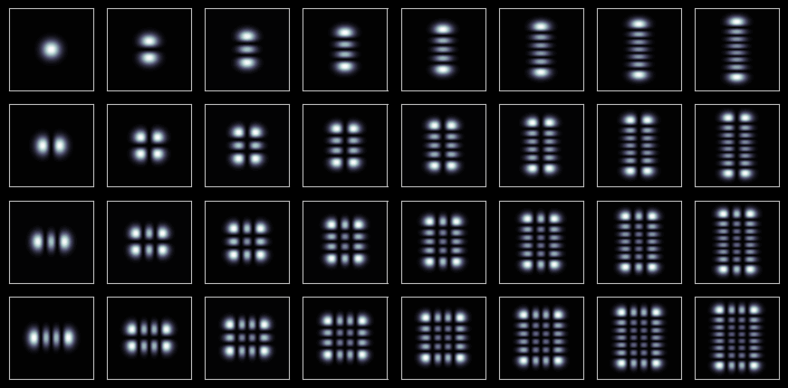
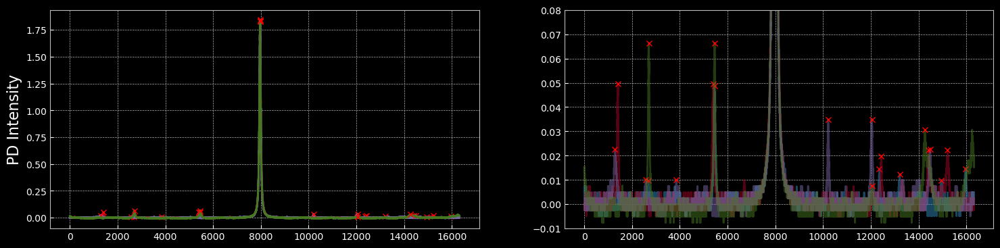
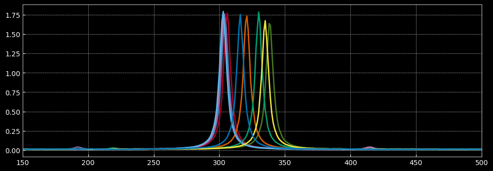
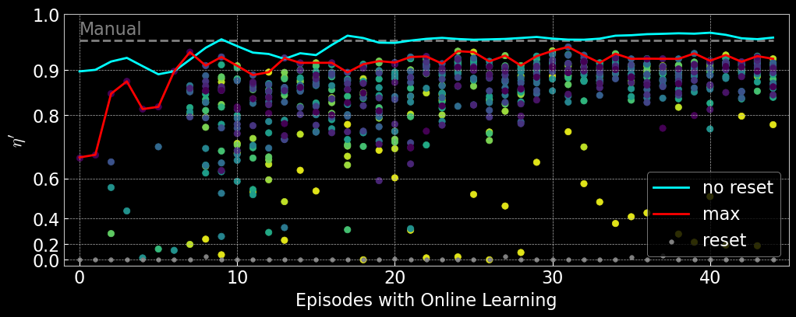
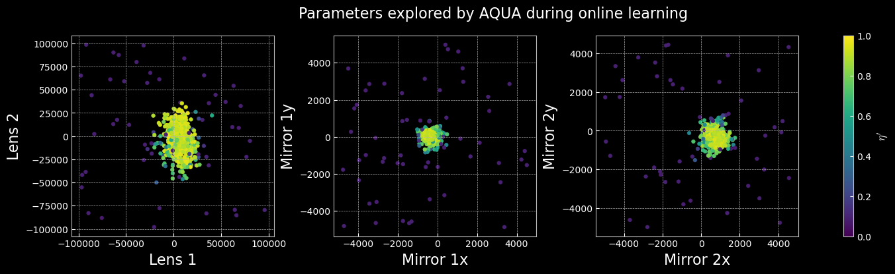
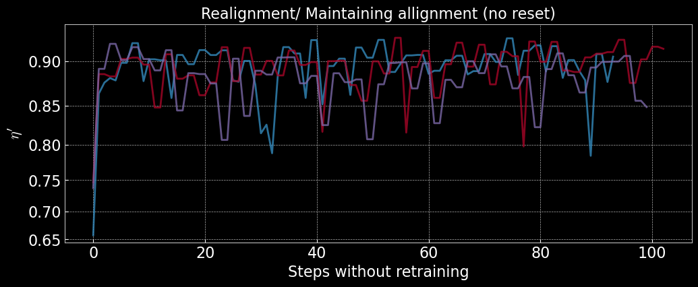
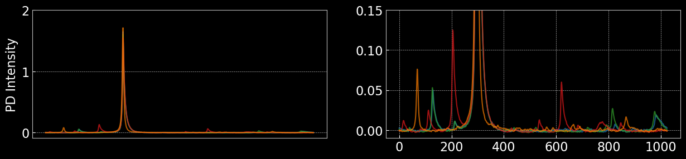
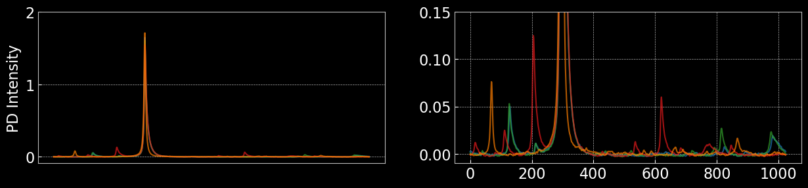
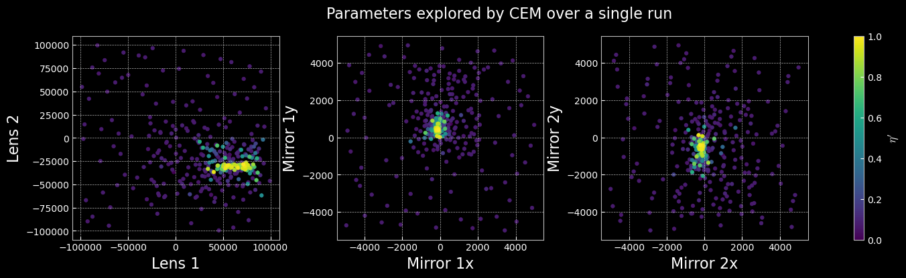

Paper Link: arXiv:2503.14260
Contact: arindam.saha@anu.edu.au
As free-space optical systems grow in scale and complexity, troubleshooting becomes increasingly time-consuming and, in the case of remote installations, perhaps impractical. An example of a task that is often laborious is the alignment of a high-finesse optical resonator, which is highly sensitive to the mode of the input beam. In this work, we demonstrate how machine learning can be used to achieve autonomous mode-matching of a free-space optical resonator with minimal supervision. Our approach leverages sample-efficient algorithms to reduce data requirements while maintaining a simple architecture for easy deployment. The reinforcement learning scheme that we have developed shows that automation is feasible even in systems prone to drift in experimental parameters, as may well be the case in real-world applications.

The observation space consists of 1024-dimensional traces from the photodetector, capturing the transmitted intensity through the optical cavity. These high-resolution signals allow the learning algorithm to distinguish between different alignment states. The figure below shows randomly sampled observations, highlighting the diversity of signals during alignment.

Simulated outputs below show different Hermite-Gauss modes as seen in the experiment. Each mode has a unique spatial profile, helping to interpret photodetector traces and guide alignment optimization.
The bounds below specify the allowed range for each actuator, set by the physical and mechanical limits of the setup. They ensure safe operation and precise control of lens translation and mirror tip/tilt. Values are in actuator thread counts.
For more info visit: Thorlabs
| Parameter | Bounds |
|---|---|
| Lens 1 | (-100000, 100000) |
| Lens 2 | (-100000, 100000) |
| Mirror 1x | (-5000, 5000) |
| Mirror 1y | (-5000, 5000) |
| Mirror 2x | (-5000, 5000) |
| Mirror 2y | (-5000, 5000) |
This is the sole reward function used in the experiment for AQUA.
def noisy_eta(obs, target_region=(400, 550)):
#input: obs - the observed cavity trace (array of length 1024)
#target_region - the region of interest, including the target mode
target_integral = np.trapz(obs[target_region[0]:target_region[1]])
complete_integral = np.trapz(obs)
eta = target_integral / complete_integral
return etaUsed to post-process all collected data and use for comparison.
def corrected_eta(obs, distance=5, prominence=5e-3, target_region=(400, 550)):
# input: distance, prominence are parameters for the SciPy peak finding algorithm
# these are to be kept constant for all data, unless additional corrections are needed.
# Correct for the detector offset
obs = obs - np.median(obs)
# Find the peaks
peaks, _ = find_peaks(obs, distance=distance, prominence=prominence)
# Calculating the reward
target_pk_height = max(obs[target_region[0]: target_region[1]])
sum_pk_height = np.sum(obs[peaks])
eta_prime = target_pk_height / sum_pk_height
return eta_primeEach colored scatter plot corresponds to a separate runs, performed on different days. As shown in the plot below, each run yields a slightly different slope, indicating changes in experimental conditions. The observed deviations are primarily due to noise. Additionally, the detector offset shifts the x-axis, so $\eta$ does not reach zero.

Manual alignment was performed by experienced operators using visual feedback from the photodetector traces. The process involved iterative adjustments of lens positions and mirror angles to maximize the transmission through the optical cavity. The resulting traces and reward statistics serve as a baseline for evaluating automated approaches. The figures below illustrate typical outcomes from manual alignment, showing both the best and average performance achieved by human operators.

Thermal drift causes fluctuations in the height and position of the transmission peak by inducing small misalignments as components expand or contract with temperature changes. These variations can degrade alignment quality, so tracking them is essential for assessing how well automated methods like AQUA maintain performance under changing conditions.
Actuator drifts refer to slow, unpredictable changes in actuator positions over time, often due to mechanical relaxation, temperature fluctuations, or electronic noise. The following plot illustrate the effect of executing a parameter on repeat

AQUA automates optical alignment using sample-efficient reinforcement learning, reducing the need for manual tuning and adapting to system drifts. It achieves high alignment quality with fewer trials, outperforming manual methods and remaining robust to noise and environmental changes.
These settings ensure fair comparison with manual alignment and highlight AQUA's ability to rapidly and reliably achieve high-quality optical alignment.
AQUA typically realigns the optical system in under a minute after a reset, requiring about 10 steps at 5.44 seconds per step. This is much faster and more consistent than manual alignment, minimizing downtime and enabling reliable, repeatable operation.

The scatter plots below illustrate the distribution of actuator parameters explored during the experiment. Each point represents a unique configuration sampled by the learning algorithm, colored according to the corresponding reward value. These visualizations help reveal which regions of the parameter space yield optimal alignment and highlight the diversity of solutions discovered by AQUA. Clusters of high-reward points indicate effective parameter combinations, while broader distributions reflect the exploration strategy and robustness of the method.
All resets shown in the paper apply a parameter chosen randomly from the entire given bounds. As seen in AQUA's online learning plot, these mostly return $\eta'=0$. Below we visualise the associated observations and the parameters.


AQUA models trained online can realign the optical system from random starting points without further retraining, consistently reaching high reward values. This demonstrates strong generalization and resilience to experimental drifts. The figures below show reward trajectories for several realignment episodes using the same trained model, with rapid and reliable convergence.

CEM iteratively samples candidate solutions from a probability distribution, evaluates their performance, and updates the distribution to focus on the most promising regions of the parameter space. This method is particularly useful for optimization problems where the search space is large and gradients are unavailable or unreliable. This provides an easy and effective method to sample the initial pre-train dataset required by AQUA.
DOI: 10.1023/A:1010091220143
 

As can be seen here, the reward landscape is different, given different configurations of the optics.
It is to be noted that the simulations are free of all kinds of drifts and one can expect to get similar rewards for repeat measurements.
Thanks to Viktoria-S. Schmiesing for help with setting up SB3 and its reward function and Aaron Tranter for the simulation.
For more information on the simulation environment visit: GW Optics
Stable Baselines
OpenAI Gym

Reward Functions used in simulation, with additional penalties to account for the multi-step architecture of standard model-free RL.
# THE REWARD FUNCTION FOR AQUA THAT CALCULATES COST FROM A TRACE
def reward(self, obs):
pv, _ = find_peaks(self.best_obs.squeeze(), height=0)
pm = 15
p1 = np.trapz(obs[pv[0]-pm:pv[0]+pm].squeeze())
not_p1 = np.trapz(np.concatenate([obs[:pv[0]-pm], obs[pv[0]+pm:]]).squeeze()) * 0.3
obs_reward = ((p1 - not_p1) + 4.0)/10.0
# The constants are chosen such that the best reward is less than 1 (by choice, not a necessity)
return obs_reward
# THE REWARD FUNCTION FOR SB THAT USES THE AQUA REWARD
# WITH ADDITIONAL PENALTIES STEPS TAKEN AND BOUNDS CROSSED
def base_rwd(self, obs):
# a static reward function
nc = reward(obs)
t = self.accuracy * self.max_neg_cost
if nc >= t:
rwd = 1.5*(np.exp(10*(nc-t))-1.0)
else:
rwd = (1.0-1.0/nc) + t
return rwd
def calculate_reward(self, neg_cost):
reward = 0
bounds_crossed = False
for i, p in enumerate(self.current_params):
if p >= self.u_bounds[i] or p <= self.l_bounds[i]:
bounds_crossed = True
if bounds_crossed:
reward -= 1
if self.steps > self.max_steps:
self.truncated = True
reward += self.base_rwd(neg_cost)
if neg_cost >= self.dynamic_accuracy * self.max_neg_cost:
reward += 10*neg_cost
self.success += 1
self.dynamic_accuracy += 0.01
if self.dynamic_accuracy >= 1.0:
self.dynamic_accuracy = 1.0
self.terminated = True
return reward
# NOTE: IN BOTH CASES (AQUA & SB) THE OBSERVATION GIVEN IS SAME (TRACE + PARAMS)
# AND THE BOUNDS USED ARE ALSO SAME